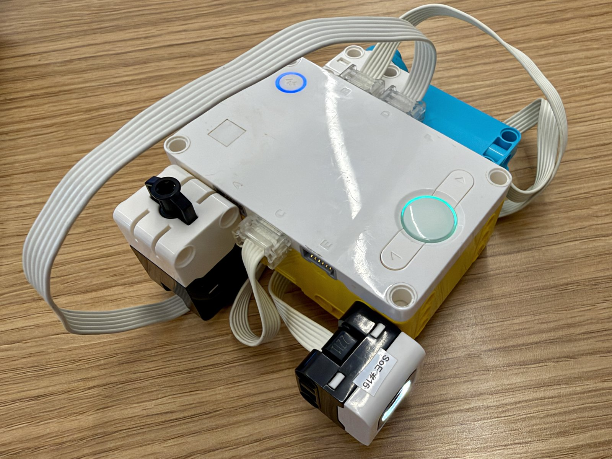
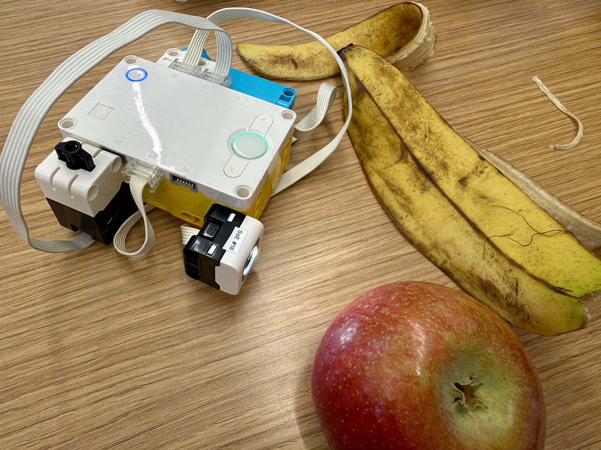

The AI Fruit Scanner challenge was to build a scanner that uses a color sensor to scan different fruits and tell you the name of the fruit.
My scanner uses a LEGO SPIKE Prime hub with a Color Sensor on port B, a Medium Motor on port C, and a Force Sensor on port D. I trained the hub to tell the difference between a yellow banana and a red apple.
To train it, I press the left hub button to select banana or the right button to select apple. The hub’s screen shows the selected fruit, and the motor turns 180° clockwise for banana or 180° anticlockwise for apple. Each press of the force sensor saves one color reading (red, green, blue, and intensity) for the selected fruit, until each fruit has five readings. If the selected fruit already has five, the screen shows SELECT OTHER.
Once both fruits have five readings, each force-sensor press scans the fruit under the color sensor. The program compares the new reading with all ten saved readings by adding up the differences in red, green, blue, and intensity, then shows the fruit of the closest saved reading on the screen. This works like a simple nearest-neighbor classifier.

# Setup: Color Sensor on B, Medium Motor on C, Force Sensor on D.
# Left hub button selects banana training.
# Right hub button selects apple training.
# Each force-sensor press records a sample until both fruits have enough samples.
# After training, each force-sensor press displays the closest matching fruit.
from hub import port, button, light_matrix
import runloop
import motor
import color_sensor
import force_sensor
# Set how many readings to record for each fruit.
SAMPLES_PER_FRUIT = 5
# Store the color readings collected during training.
banana_samples = []
apple_samples = []
# Start with banana selected for training.
training_bananas = True
async def main():
global training_bananas
# Show that banana is selected when the program starts.
await light_matrix.write("BANANA")
# Keep checking for a fruit selection or a force-sensor press.
while True:
# The left button selects banana training and turns the motor clockwise.
if button.pressed(button.LEFT) > 0:
training_bananas = True
await motor.run_for_degrees(port.C, 180, 300)
await light_matrix.write("BANANA")
# Wait for the button to be released before checking again.
while button.pressed(button.LEFT) > 0:
await runloop.sleep_ms(20)
# The right button selects apple training and turns the motor anticlockwise.
elif button.pressed(button.RIGHT) > 0:
training_bananas = False
await motor.run_for_degrees(port.C, -180, 300)
await light_matrix.write("APPLE")
# Wait for the button to be released before checking again.
while button.pressed(button.RIGHT) > 0:
await runloop.sleep_ms(20)
# A force-sensor press records a sample while either fruit needs training.
if force_sensor.pressed(port.D):
if len(banana_samples) < SAMPLES_PER_FRUIT or len(apple_samples) < SAMPLES_PER_FRUIT:
# Read the color sensor's red, green, blue, and intensity values.
reading = color_sensor.rgbi(port.B)
# Save the reading for the selected fruit, if it still needs samples.
if training_bananas and len(banana_samples) < SAMPLES_PER_FRUIT:
banana_samples.append(reading)
await light_matrix.write("BANANA SAVED")
elif not training_bananas and len(apple_samples) < SAMPLES_PER_FRUIT:
apple_samples.append(reading)
await light_matrix.write("APPLE SAVED")
else:
# Tell you to select the fruit that still needs samples.
await light_matrix.write("SELECT OTHER")
else:
# Read the color currently under the color sensor.
new_reading = color_sensor.rgbi(port.B)
# Start with the first banana sample as the closest match.
closest_distance = 1000000
predicted_fruit = "BANANA"
# Compare the reading with every saved banana sample.
for sample in banana_samples:
distance = 0
for channel in range(4):
distance += abs(new_reading[channel] - sample[channel])
if distance < closest_distance:
closest_distance = distance
predicted_fruit = "BANANA"
# Compare the reading with every saved apple sample.
for sample in apple_samples:
distance = 0
for channel in range(4):
distance += abs(new_reading[channel] - sample[channel])
if distance < closest_distance:
closest_distance = distance
predicted_fruit = "APPLE"
# Display the fruit label of the closest saved sample.
await light_matrix.write(predicted_fruit)
# Wait for the force sensor to be released before doing anything again.
while force_sensor.pressed(port.D):
await runloop.sleep_ms(20)
# Pause briefly so the loop can check the controls smoothly.
await runloop.sleep_ms(30)
runloop.run(main())